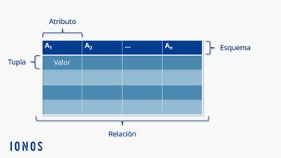
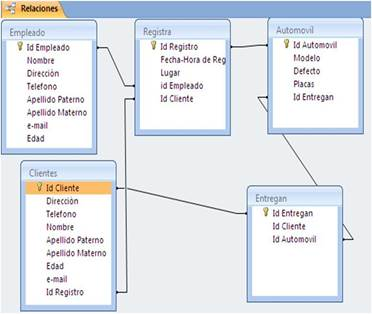

Están relacionadas en tablas bidimensionales compuestas por registros, uno por cada renglón del tabla llamados (tuplas) y representa una entidad y los campos que conformar cada registro se llaman (sus atributos) se almacena datos no relevantes, se pueden almacenar, recuperar y consultar la información de manera sencilla a través de consultas conocidas como SQL.
Un sistema de administración de bases de datos relacionales (RDBMS) es un programa que se usa para crear, actualizar y administrar bases de datos relacionales. Algunos de los RDBMS más conocidos son MySQL, PostgreSQL, MariaDB, Microsoft SQL Server y Oracle Database.
Las bases de datos relacionales basadas en la nube, como Cloud SQL, Cloud Spanner y AlloyDB se volvieron cada vez más populares, ya que ofrecen servicios administrados para el mantenimiento de las bases de datos, parches, administración de capacidades, aprovisionamiento y asistencia de infraestructura.
El principal beneficio del modelo de base de datos relacional es que proporciona una manera intuitiva de representar datos y permite un acceso fácil a datos relacionados. Por lo tanto, el uso de bases de datos relacionales es más común en las organizaciones que necesitan administrar grandes cantidades de datos estructurados, desde el seguimiento del inventario hasta el procesamiento de datos transaccionales y el registro de aplicaciones.
